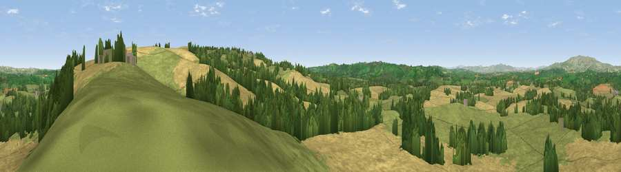

Viewpoint near Upper Rochford
#11363 in England · top 25% of its area beats it · near Upper Rochford · path 101 mWhere it is
The exact computed spot (SO 64475 66275). Click the marker for map links.
Public access: the nearest public right of way is about 101 m away — the final stretch may cross private land. Computed from Natural England's CRoW access layer and OpenStreetMap rights of way — not the legal definitive map. Always verify locally.
The view, rendered

A 360° render of this exact spot computed from the terrain model, tree cover and land cover — summer colours, afternoon light, calibrated against photographs of famous viewpoints. Real trees, hedges and buildings will differ in detail.
The panorama
Grey silhouette: terrain skyline in each direction (720 bearings, Earth curvature and refraction included). Dashed green: skyline with trees (+15 m) and buildings (+8 m) as obstacles. Blue strip: how far the ground is visible on each bearing.
Where the view opens
Wedge length = distance to the farthest visible ground on that bearing (vegetation-aware). Rings at 10, 25 and 50 km.
What fills the view
46% cropland · 38% grassland · 15% woodland
Angular shares of the visible panorama (visual magnitude), not map area. Landscape diversity 0.45 (0–1 Shannon).
Key numbers
More beautiful places nearby
The staircase of upgrades: each row has a higher view potential than everything closer. Driving times are estimates from straight-line distance, calibrated against real road routing — check an actual route before setting out.
| Place | Direction | Drive | Score |
|---|---|---|---|
| Viewpoint near Upper Rochford | ESE · 1 km | ~4 min | 71.0 |
| Viewpoint near Hope Bagot | NNW · 9 km | ~17 min | 73.7 |
| Walsgrove Hill | E · 10 km | ~19 min | 79.6 |
| Woodbury Hill | E · 10 km | ~20 min | 81.6 |
| Viewpoint near Great Witley | E · 11 km | ~20 min | 83.4 |
| Titterstone Clee | NNW · 13 km | ~24 min | 83.8 |
| North Hill | SSE · 23 km | ~39 min | 86.8 |
| Worcestershire Beacon | SSE · 24 km | ~40 min | 87.1 |
52.29345, -2.52230 · source: screening · position refined by local search. Computed location — check access rights before visiting.